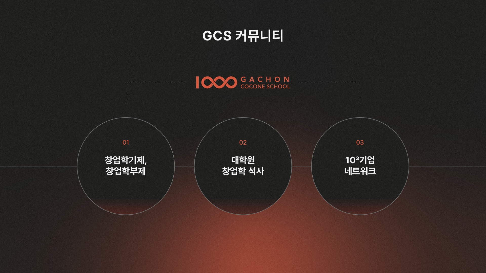
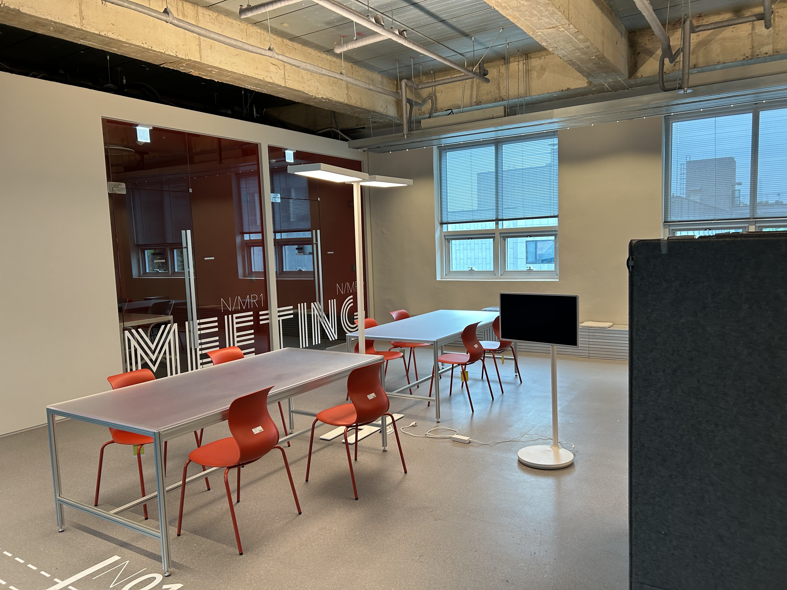
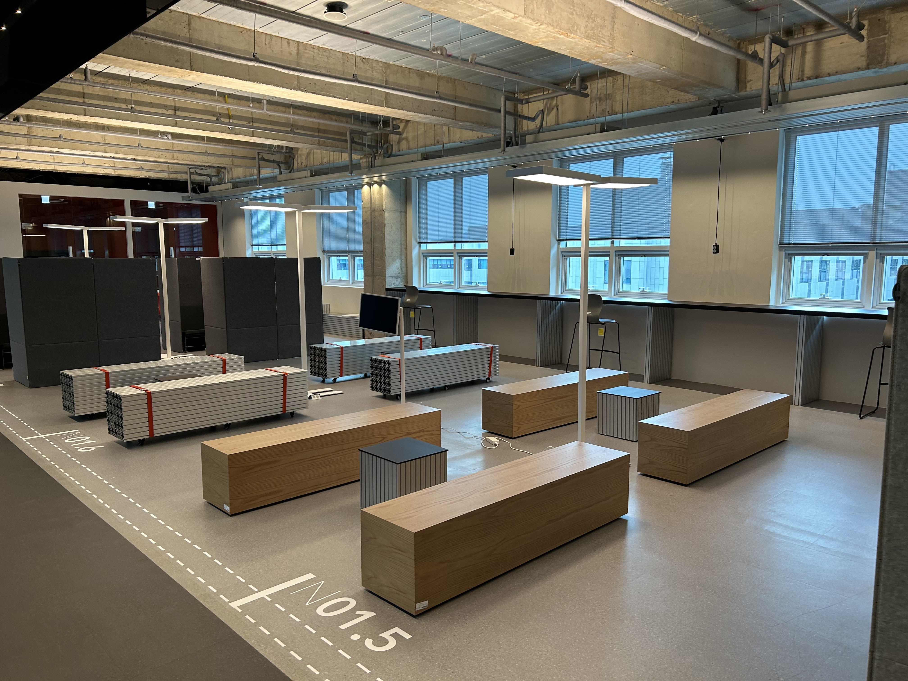
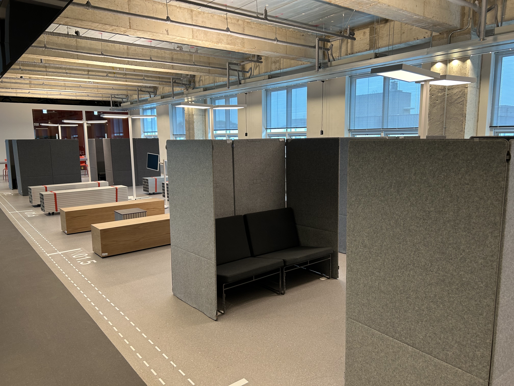
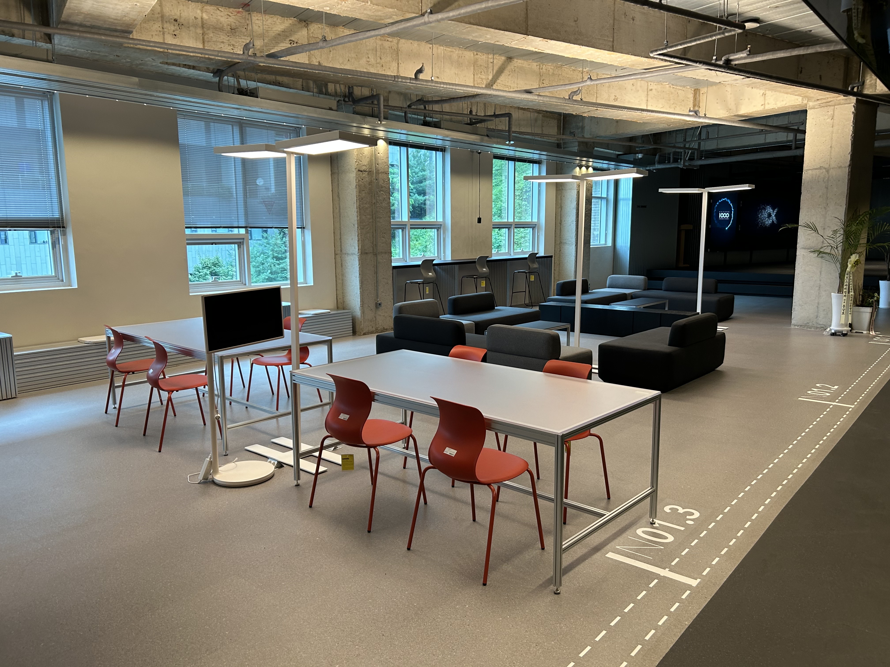
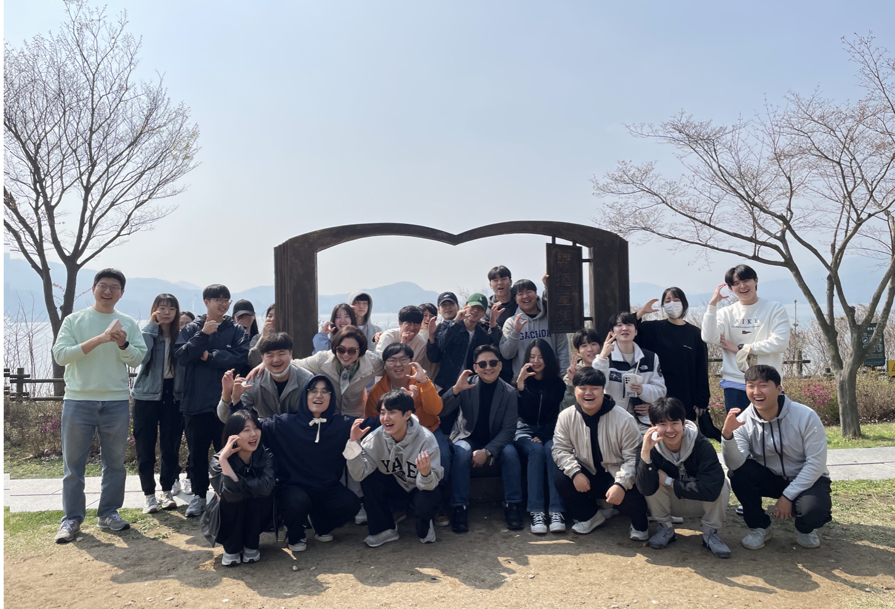
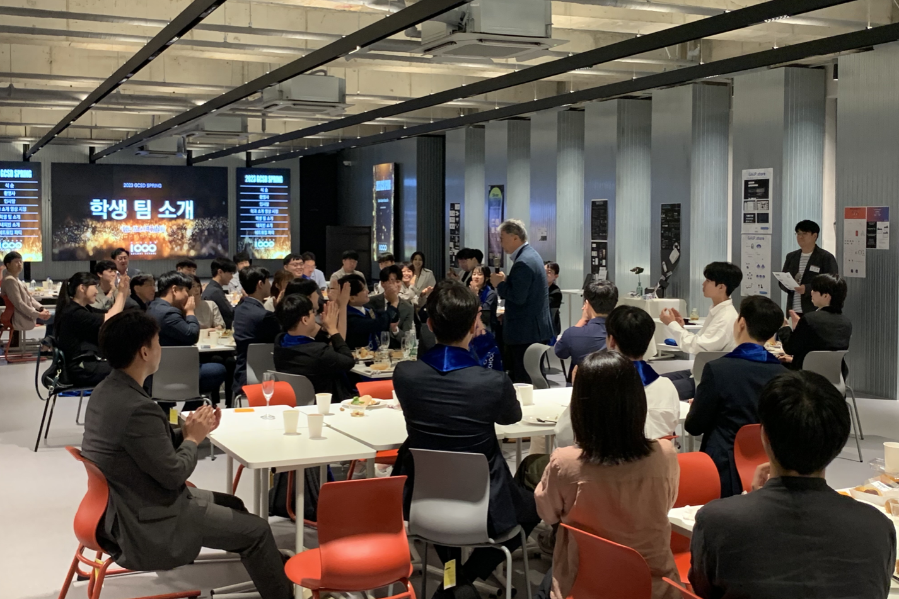
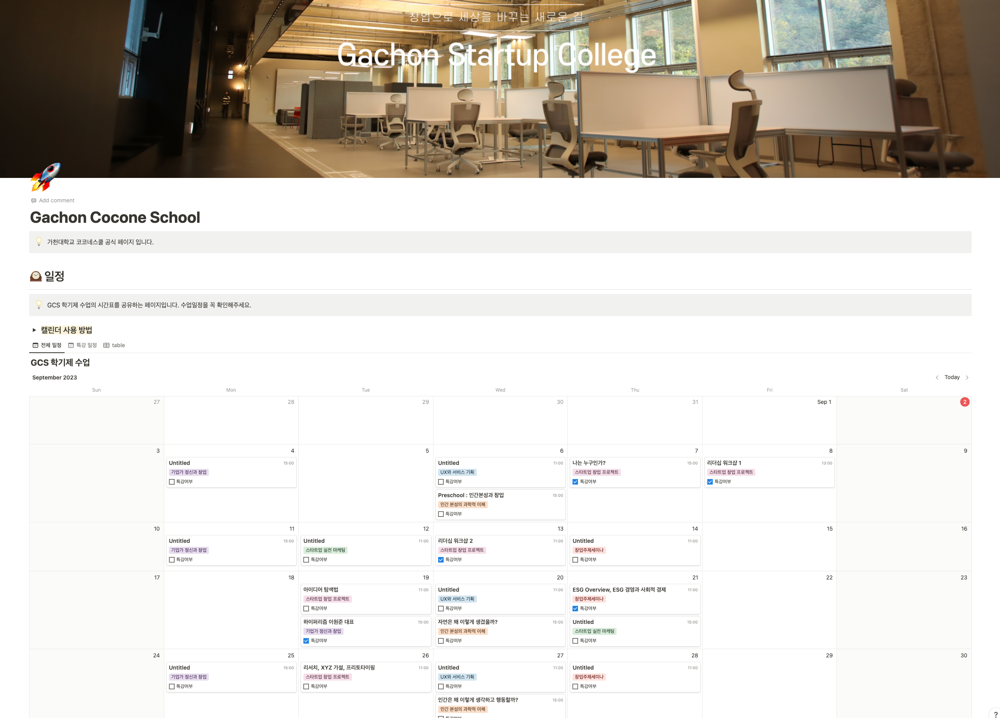
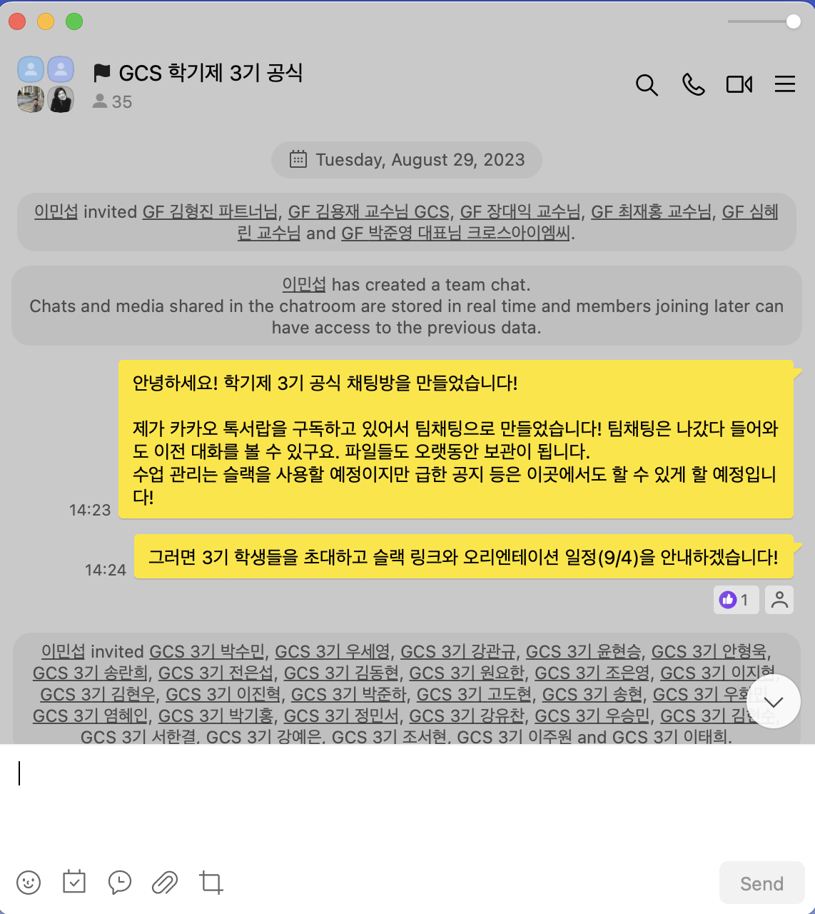
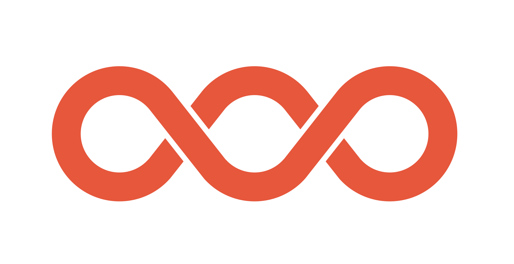

GCS 학기제 3기 전체 Orientation
2023-2 창업학기제 운영 방식 소개
Gachon Cocone School
2023-09-04
GCS 학기제 3기 Orientation
순서
- GCS 소개
- 학기제 일정 소개
- 각 수업 소개
- 그 외 행사 소개
- 커뮤니케이션 방법

GCS 소개
GCS 소개
- 환영사
- GCS 미션/비전과 GCS 커뮤니티
- 교원 소개
- 운영팀 소개
- 공간 소개
환영사
GCS 미션
창업으로 세상을 바꾸는 새로운 길
인간 본성이 깃든 창업 공동체
GCS 비전
ㄸㄸㄸㄸ
GCS 비전
따뜻하고, 똑똑한
기업가와 기업을 길러낸다!
GCS 커뮤니티
교원 소개
- 전임교원
- 장대익 학장
- 최재홍 교수
- 초빙교원
- 이민섭 초빙교수
- 심혜린 초빙교수
- 박준영 초빙교수
- 김용재 초빙교수
- 김형진 초빙교수
운영팀 소개
- 장윤석 과장
- 이미솔 직원
- 신상민 직원
- 박성한 직원
- 류호현 조교
GCS 공간소개
- Creative Workspace(North)
- 학기제와 대학원생을 위한 공간
- 회의와 프로젝트에 적합한 공간
- Open Office(South)
- 학부제 진학 학생 팀을 위한 공간
- 업무에 적합한 공간, 법인 설립 전에도 활용 가능
- 현재 10팀 29명 사용 중
- 기업 전용 공간
- 법인설립한 팀 중 별도 선발예정
Creative Workspace(North)
Creative Workspace
Creative Workspace
Creative Workspace
Open Office(South)

기업 전용 공간

GCS 공간 사용시 주의사항🚨
- ⏰ 별도의 허용이 없는 한 공간 이용시간은 매일 08-23시까지!
- 안전사고 등 관리의 어려움
- 2기 때 09 ~ 22시 운영에서 08 ~ 23시로 확대
- 🙅♂️ 학기제 동기, 학부제 선배, 대학원생, 교원, 운영팀이 함께 쓰는 공간으로 타인에게 피해를 주는 행위는 삼가주세요!(지나치게 큰 소음발생, 배달음식 취식(가벼운 간식은 허용됨), 취침이나 누워있는 등 방만한 모습, 뒷정리 결여)
- 🔌 주인의식을 가지고 마지막에 나가게 되면 냉난방기와 조명을 꺼주세요!
학기제 일정 소개
학기제 일정 소개

학기제 일정 소개
- 몰입단계 : 아이디어톤
- 공감단계 : 아이디어마켓, 공감캠프(MT), 팀빌딩
- 혁신단계 : 최종성과발표회
학기제 일정 소개

몰입단계
- 목적 : 진수(進水)
- 줄을 끊고 물에 띄운 뒤 여러가지 집중적으로 테스트를 해보는 기간
- 창업활동과 GCS 학기제에서 어떤 목표를 달성해야 하는지 명확히하고 몰입함으로써 학기제에 적응하는 기간
- 기간 : 9.4(월) ~ 9.13(수)(10일 간)
- 주요행사 : 아이디어톤
몰입단계

아이디어톤

아이디어톤
- 7개 팀으로 진행하고 팀당 10분이내 PPT 형식으로 아이디어 발표!
- 발표후 심사위원과 청중의 질문 5분!
- 창업 교육 생태계에 대한 밀도 있는 조사와 가천대 및 대학생들에 대한 실증적인 조사를 기반으로 목표를 달성하기 위해 해볼 수 있는 창의적인 아이디어를 발전시킬 것!
아이디어톤 과제
- 평가
- 1,2기 학부제 학생들이 심사위원으로 참여하여 익명으로 평가
- 아이디어톤 1위팀 Reward
- 원하는 GCS 교수님과 언제든 맛있는 점심을 먹을 수 있는 기회
아이디어톤 조구성
- 1조,이지현,우세영,우승민,박준하
- 2조,조서현,김동현,이주원,원요한
- 3조,강예은,이진혁,정민서,조은영
- 4조,고도현,전은섭,강관규,김현수
- 5조,김현우,송란희,이태희,박기홍
- 6조,윤현승,안형욱,박수민,서한결
- 7조,염혜인,강유찬,우화민,송현
공감단계
- 팀과 고객에 깊이 공감하라!
- 각 수업 과제 등을 통해서 지속적으로 다른 팀원들과 팀프로젝트 기회를 만들 예정.
- 주요행사
- 아이디어 마켓
- 공감캠프(MT)
- 팀빌딩 완료
아이디어 마켓
- 10월 31일(화) 11:00~
- 팀을 이루어 창업 아이디어가 사업화 할만한 아이템인지를 서비스를 기획하고 만들기 이전에 검증해보는 단계
공감캠프(MT)
- 일시 : 11월 2일(목) ~ 11월 3일(금)(1박 2일)
- 장소 : 곤지암리조트(잠정)
- 최종 팀빌딩 이전 학기제 동기와 교원들이 단합을 하기 위한
프로그램을 운영할 예정

팀빌딩( ~ 11/10까지)
- 팀빌딩 규칙
- 팀인원은 3~5인으로 제한함.
- 최종 팀세팅이 완료된 수 최종성과발표회에 이르기까지 해당팀이 유지되어야 함.
- 학기제 수료 이후에 팀을 바꾸는 것은 문제 없음.
혁신단계
- 더 단단하게(team), 더 빠르게(product)!
- 주요행사
- 최종성과발표회
최종성과발표회
- 12월 중순(미정)

학기제 지원
- 학기제 동안 팀프로젝트 지원금 1인당 10만원
- 학기제 수료후 수료생에게 창업활동장려금 100만원 일괄 지급
학기제 이후
- 수료생에 한하여 학부제 진학을 선택할 수 있음.
- 학부제 진학이후
- 창업-P 및 특화 전공과목(창업심화세미나)으로 지속적인 멘토링
- 창업을 위한 보육공간 제공(Open office, 기업공간 정식 입주)
- 코코네 창업투자지원심사 라운드(분기 1회 시행)

각 수업 소개
각 수업 소걔
- 기업가정신과 창업
- 스타트업 창업프로젝트
- 인간본성의 과학적 이해
- UX와 서비스 기획
- 스타트업 실전 마케팅
- 창업주제세미나
각 수업 소개

기업가정신과 창업
- GCS만의 독특한 기업가 정신을 함양하는 수업이자 자신만의 기업가 정신을 정립하는 것이 목표인 수업
- GCS 설립자이신 천양현 회장님의 강연과 창업씬에서도 특히 모시기 힘든 분들의 독특한 인사이트를 얻을 수 있음.
- 담당교수 : 최재홍, 장대익
스타트업 창업프로젝트
- GCS 학기제의 뼈대가 되는 프로젝트 과목
- 아이디어를 생성하고 팀을 이뤄 아이디어를 발전시키고 MVP를 만들게 되는 창업 과정
- 수업 안에 인간본성의 과학적 이해, UX와 서비스기획 그리고 스타트업 실전마케팅 세 수업의 융합 수업이 총 3차례 있는 것이 Unique point
- 담당교수 : 이민섭, 박준영, 심혜린
인간본성의 과학적 이해
- 인간 본성에 호기심을 불러일으켜서 팀과 고객의 마음과 행동을 과학적으로 이해하는 기업가를 육성하고자 하는 GCS의 독특한 교육 목표를 달성하기 위한 과목
- 자연, 인간, 사회, 그리고 인간이 만들어낸 문화와 기술에 대해 진화학적 관점에서 접근할 예정
- 담당교수 : 이민섭, 장대익
UX와 서비스 기획
- 기획자가 아니라 사용자의 관점에서 사랑받는 서비스를 만들기 위해 알아야하는 필수 교과목
- 담당교수 : 심혜린
스타트업 실전마케팅
- 한정된 자원을 가진 창업팀이 고객, 시장, 브랜드를 이해하고 데이터를 기반으로 적합한 마케팅 전략을 배우는 교과목
- 담당교수 : 박준영
창업주제세미나
- 시기에 맞는 다양한 창업주제(ESG, AI, Web3 등)에 대한 시각을 넓혀주기 위한 수업.
- 학기제 학생뿐만 아니라 GCS alumni 및 교원들이 다함께 배우는 자리!
- 담당교수
- 장대익, 김용재, 김형진
그 외 행사 소개
그 외 행사 소개
- 북티(북 & 커뮤니티, 북(book) & 티(tea))
- 한달에 1회, 창업 및 창업생태계와 관련하여 중요한 저자를 모셔 차와 함께 깊이 있는 이야기를 나누는 시간
- 생성AI 심포지엄
- 10월, 12월 총 2회 예정
- 1학기 주제 : 챗GPT와 교육혁명(1회), 챗GPT와 콘텐츠 혁명(2회)
- 2학기 주제 : 챗GPT와 광고혁명(3회), 챗GPT와 헬스케어 혁명(4회)
- 코리아스타트업 포럼 주관 COMEUP X (11월 9일(목) 15:30 ~ 17:30, DDP)
- GCS 프로그램(학생 발표 등 기회)
- 기타(한일 국제 해커톤(12월 중) 등)
학기제 일정 및 그 외 일정들에 대한 요구사항🚨
- 점심시간이 공식적으로 14~15시로 되어 있으나 오전 수업을 13시 30분쯤 끝내서 식사를 할 수 있도록 할 예정
- 학기제 일정은 6개의 수업 시간 외의 시간에 각자가 얼마나 시간을 쏟는지가 중요하기에 다른 수업은 물론 다른 활동을 병행하는 것은 어려움.
- 또한 특강 일정의 변동으로 인해 기존 수업과 바뀌는 일이 발생할 수 있으므로 communication tool을 잘 확인할 의무가 있음.
- 수업 외 시간에 이뤄지는 많은 행사들도 일차적으로 학기제 학생들을 위한 행사들이며 GCS 커뮤니티 활성화를 위해 수업에 준하게 반드시 참여를 요구함.
커뮤니케이션 방법
커뮤니케이션 tool
- Slack
- Notion
- KakaoTalk team chat
- Discord
- 멘토링/상담 예약 관리 시스템
Slack
Slack
- 용도
- 학기제 및 대학원 학생분들을 위한 수업관리 도구
- 사용규칙
- 각 수업을 담당하는 교원이 수업채널에 수업 공지와 자료들을 올리고 수업과 관련된 토의나 논의를 자유롭게 진행
- 수업별 공지와 수업자료를 올리면 꼭 수신확인을 위해 ✅ 녹색 체크표시를 reaction으로 남겨주세요!
Notion
Notion
- 용도
- 학기 중 일어나는 모든 수업 및 행사 일정을 관리
- 역할별(학생, 교원, 운영)로 필요한 정보들을 모아서 보여줌
- Notion 링크
KakaoTalk team chat
KakaoTalk team chat
- 용도
- 수업 혹은 행정관련하여 급한 전파사항이 있을때 활용
Discord
지속적인 GCS 커뮤니티 유지를 위해 운영 중
수업 및 행정상 급한 공지들은 이곳에서 다루지는 않을 예정!
멘토링/상담 예약 및 관리 시스템
- 학기중 시스템을 만들 예정
- 시스템이 만들어지기 전까지는 Slack DM이나 개인톡을 통해 요청
Q&A


Orientation